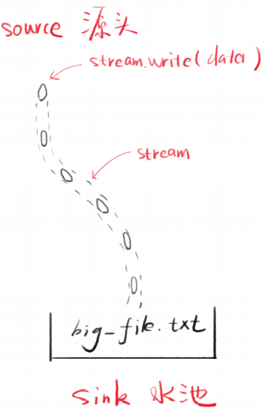
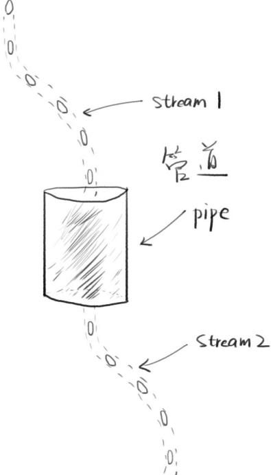
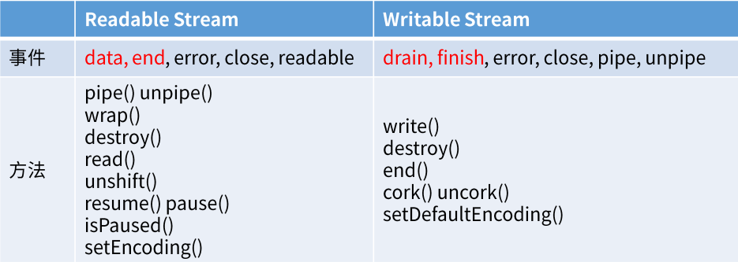
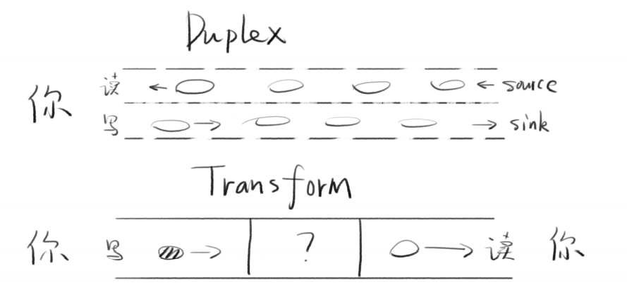
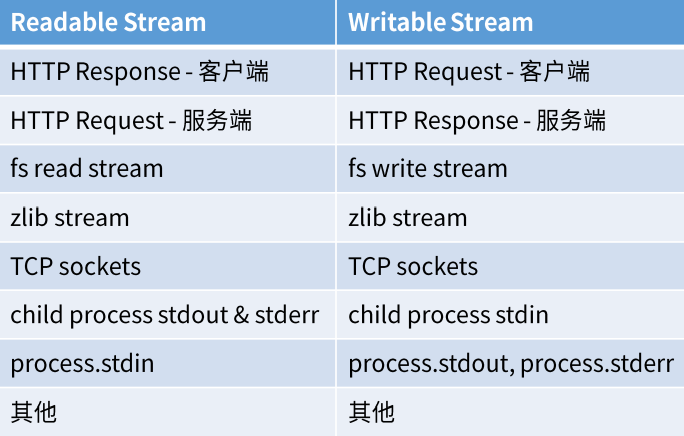

NodeStream模块
1.三个示例引入Stream
1.1 创建流
// 引入fs模块
const fs = require('fs')
// 利用fs创建流
const stream = fs.createWriteStream('./big_file.txt')
// 写数据
for (let i = 0; i < 100000; i++) {
stream.write(`这是第${i}行内容，我们需要很多很多内容\n`)
}
// 关闭流
stream.end()
console.log('done')
//命令行执行
node 1.js
-
分析
- 流程：打开流，多次往里面塞内容，关闭流
- 看起来就是可以多次写，没什么大不了的
- 最终得到一个100M左右的文件
-
Stream是水流，但默认没有水
-
stream.write可以让水流中有水（数据）
-
每次写入的数据片段叫做chunk（块）
-
产生数据的一端叫做source
-
接收数据的一端叫做sink

1.2 浏览器直接读取文件
// 引入文件模块
const fs = require('fs')
// 引入http模块
const http = require('http')
// 开启服务器
const server = http.createServer()
server.on('request', (request, response) => {
// 读取文件
fs.readFile('./big_file.txt', (error, data) => {
if (error) throw error
response.end(data)
console.log('done')
})
})
// 开启监听端口
server.listen(8888)
- 分析
- 用任务管理器看Node.js内存占用，相对比较高
- 如果多人同时访问服务器中的此文件，内存占用就爆炸了
1.3 Stream读取文件
用Stream改写第二个例子
const http = require('http')
const fs = require('fs')
const server = http.createServer()
server.on('request', (request, response) => {
// 利用流读取文件
const stream = fs.createReadStream('./big_file.txt')
stream.pipe(response)
})
server.listen(8888)
-
占用内存较低
-
管道
- 两个流可以用一个管道相连
- stream1的末尾连接上stream2的开端
- 只要stream1有数据，就会流到stream2
-
常用代码
stream1.pipe(stream2) // 可读的流.pipe（可写的流） -
链式操作
a.pipe(b).pipe(c) // 等价于 a.pipe(b) b.pipe(c)
-
管道实际上是事件的封装
// stream1一有数据就塞给stream2 stream1.on('data', chunk => { stream2.write(chunk) }) // stream1停了，就停掉stream2 stream1.on('end', () => { stream2.end() })如果需要自定义的方式去使用流的话，那么事件监听是个不错的选择。
1.4 总结
流（stream）是一种在 Node.js 中处理流式数据的抽象接口。 stream 模块提供了一些基础的 API，用于构建实现了流接口的对象。- Node.js 提供了多种流对象。 例如，发送到 HTTP 服务器的请求和 process.stdout 都是流的实例。
- 优势：
- 非阻塞式的数据处理方式可提升效率
- chunk数据分块可节省内存
- 管道可提升扩展性，方便组合
2 Stream对象的原型链
console.log(createReafStream(path))- 自身属性：由
fs.ReadStream构造 - 原型：
stream.Readable.prototype - 二级原型：
stream.Stream.prototype - 三级原型：
events.EventEmitter.prototype - 四级原型：
Object.prototype
- 自身属性：由
- Stream对象都继承了
EventEmitter
3 支持的事件和方法

-
data事件stream.on('data', chunk => { console.log('读取了一次数据') console.log(chunk)// 每次读取的数据片段（Buffer二进制） }) -
end事件stream.on('end', () => { console.log('数据读完了') }) -
error事件：文件丢失，文件权限问题
-
**
drain**事件：之前拥堵的水流现在已经干涸了- 当写的速度远远小于读的速度时，数据在管道中会出现拥堵的现象
- 面试常考
-
cork()：强制把所有写入的数据都缓冲到内存中，用到再学
4 Stream分类
| 名称 | 特点 |
|---|---|
| Readable | 可读 |
| Writable | 可写 |
| Duplex | 可读可写（双向）默认情况下，读和写是两条互相独立的通道 |
| Transform | 可读可写（变化）例如babel，写es6，读到es5，流相当于转换器 |

5 Readable和Writable的特点
5.1 Readable Stream
-
静止态paused和流动态flowing
- 默认处于paused态
- 添加data事件监听（或pipe），就变为flowing态
- 删除data事件监听（或pipe），就变为paused态
- pause()可以将流变为paused
- resume()可以将它变为flowing
stream.pipe(reponse) stream.pause()// 静止态 setTimeOut(() => { stream.resume()// 3s后恢复为流动态 }, 3000)
5.2 Writable Stream
-
drain流干了事件
-
表示可以加点水了
-
我们调用stream.write(chunk)的时候，可能会得到false
-
false的意思就是写的太频繁了，数据积压了
-
这个时候我们就不能再write了，要监听drain
-
等drain事件触发了，我们才能继续write
-
-
const fs = require('fs')
function writeOneMillionTimes(writer, data) {
let i = 1000000
write()
function write() {
let ok = true //默认可以写
do {
i--
if (i === 0) {
// 最后一次写
writer.write(data)
} else {
// 如果i不为0，则说明还继续写
// 向writer中写数据的同时，把值给ok，进入下一次判断
ok = writer.write(data)
if (ok === false) {
console.log('不能再写了')
}
}
} while (i > 0 && ok)
// 如果ok不为true（写不进去值了）
if (i > 0) {
// 就监听writer的drain事件
writer.once('drain', () => {
console.log('干涸了，可以写了')
// 如果drain事件触发了，则继续写
write()
})
}
}
}
const writer = fs.createWriteStream('./big_file.txt')
writeOneMillionTimes(writer, 'hello world')
- finish事件
- 调用stream.end()之后，触发finish事件
- 缓冲区数据都已经传给底层系统之后，触发finish事件
6 创建流
6.1 创建Writable Stream
const { Writable } = require('stream')
const outStream = new Writable({
write(chunk, encoding, callback) {
console.log(chunk.toString())
callback()
}
})
// process.stdin是一个用户输入stream
process.stdin.pipe(outStream)
// 用监听事件改写
// process.stdin.on('data', chunk => {
// outStream.write(chunk)
// })
6.2 创建Readable Stream
const { Readable } = require('stream')
const inStream = new Readable()
inStream.push("ABCDEFGH")
inStream.push('IJKLMNOP')
inStream.push(null)
// 等同于inStream.pipe(process.stdout)
inStream.on('data', chunk => {
process.stdout.write(chunk)
console.log('写了一次数据')
})
// 这个流是先推再读 不管读没读 都推进去了 不推荐
const { Readable } = require('stream')
const inStream = new Readable({
read(size) {
const char = String.fromCharCode(this.currentCharCode++)
this.push(char)
console.log(`推了${char}`)
if (this.currentCharCode > 90) {// Z
this.push(null)
}
}
})
inStream.currentCharCode = 65 // A
inStream.pipe(process.stdout)// d
6.3 创建duplex流
const { Duplex } = require("stream")
const inoutStream = new Duplex({
write(chunk, encoding, callback) {
console.log(chunk.toString());
callback();
},
read(size) {
this.push(String.fromCharCode(this.currentCharCode++));
if (this.currentCharCode > 90) {
this.push(null);
}
}
});
6.4 创建transfrom流
const { Transform } = require("stream");
const upperCaseTr = new Transform({
transform(chunk, encoding, callback) {
this.push(chunk.toString().toUpperCase());
callback();
}
});
// 将用户输入的字符传到transform流中进行大写处理，再打印输出出来
process.stdin.pipe(upperCaseTr).pipe(process.stdout);
-
内置的transform流（压缩文件）
const fs = require("fs"); const zlib = require("zlib"); const file = process.argv[2];// 获取用户传的第二个参数（路径） fs.createReadStream(file) // 每读一点数据，就传给Gzip压缩 .pipe(zlib.createGzip()) // 没完成一次chunk的传输，就打印输出一个'.' .on("data", () => process.stdout.write(".")) // 将数据保存在以.gz结尾的文件中 .pipe(fs.createWriteStream(file + ".gz")) // 传输完成，输出'Done' .on("finish", () => console.log("Done")); // node gzip.js ./big_file.txt -
单独封装transform流
const fs = require("fs"); const zlib = require("zlib"); const file = process.argv[2]; const { Transform } = require("stream"); const reportProgress = new Transform({ transform(chunk, encoding, callback) { process.stdout.write("."); // this.push(chunk)是一样的 // 因为callback总是会运行，所以将chunk写到callback第二个参数，继续传输 callback(null, chunk);// 第一个参数表示当出错的时候传null } }); fs.createReadStream(file) .pipe(zlib.createGzip()) // 说明，我们可以对数据进行无限次的处理，只需用pipe连接一个transform流即可 .pipe(reportProgress) .pipe(fs.createWriteStream(file + ".gz")) .on("finish", () => console.log("Done")); // node gzip.js ./big_file.txt -
加密并压缩
// 引入node自带的crypto加密模块 const crypto = require("crypto"); // .. fs.createReadStream(file) // 使用crypto对文件使用aes192方式加密 .pipe(crypto.createCipher("aes192", "123456")) // 注意应先加密再压缩 .pipe(zlib.createGzip()) .pipe(reportProgress) .pipe(fs.createWriteStream(file + ".gz")) .on("finish", () => console.log("Done"));
7 Node.js中的Stream

8 参考
-
Node’s Stream
https://jscomplete.com/learn/node-beyond-basics/node-streams
-
Node.js Stream 文档
-
面试
最后修改于 2021-07-08